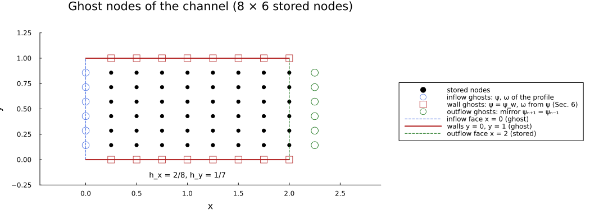
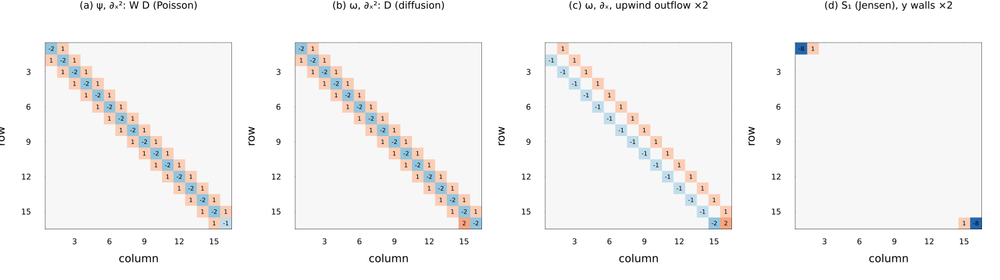
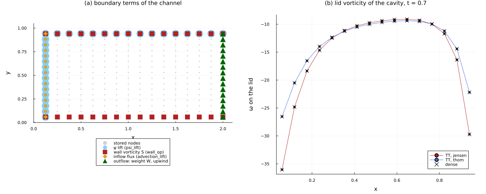

Vorticity–streamfunction formulation
In this tutorial we explain how every boundary condition of the vorticity–streamfunction formulation (INSVorticityExperiment) is implemented: the faces that describe the boundary of the domain, the grid they imply, the stream-function Poisson system and its lifts, the velocity, the wall vorticity, and the closures of the advection and the diffusion in the transport of the vorticity (VorticityCache, VorticityTransportRHS). The formulation follows Kiffner & Jaksch, Tensor network reduced order models for wall-bounded flows (2023), and the tutorial on the Lid-driven cavity runs it on the classical benchmark.
The whole construction relies on the same idea as the Velocity–pressure formulation. Every operator of DifferenTT is the interior central stencil, completed by values at nodes that are not stored, the ghost nodes. A boundary condition is a rule that gives those ghost values. When the rule involves the unknowns, substituting it changes the operator; when it involves only data, it adds a known vector, a lift, to the right-hand side. What changes in this formulation is the role of the faces: every face fixes the ghost values of the stream function $\psi$ and of the vorticity $\omega$ together, walls and inflows are ghost nodes one spacing outside the stored nodes, static ghost values become lifts, and the ghost values of the vorticity on a no-slip wall, which depend on $\psi$, become an operator.
We proceed as follows. We first state the equations (Sec. 1), build the grid that the faces imply (Sec. 2), and turn the faces into the boundary conditions of the fields (Sec. 3). We then treat, one by one, the stream-function Poisson system (Sec. 4), the velocity (Sec. 5), the wall vorticity (Sec. 6), the advection (Sec. 7) and the diffusion (Sec. 8), and we validate the scheme on a Poiseuille channel and on the lid-driven cavity (Sec. 9). Each closure is printed on a grid of 8 to 16 nodes per axis and checked against a dense reference built by hand from the ghost-node rule; all the checks run in this tutorial, and their results are printed.
Several of the functions we call are not exported: some are public (such as wall_vorticity_coefficients or wall_vorticity_source), and the others are internal (such as ghost_omega or wall_vorticity_operator). We call them qualified, DifferenTT.name, and show the internal ones only to expose the construction; a user builds the scheme with the faces, vorticity_grid and INSVorticityExperiment.
using DifferenTT
using ITensors, ITensorMPS
using LinearAlgebra
using Plots
using Printf
using Random
using StableRNGs
rng = StableRNG(2023);The dense checks contract MPOs of 8 sites into matrices, i.e. ITensors with 16 indices, for which ITensors warns by default; we raise the threshold.
ITensors.set_warn_order(18);We reuse three helpers of the velocity–pressure tutorial. ghost_operator builds a one-dimensional operator from the stencil coefficients $c_k$, placing the coefficient of row $i$ on column $i + k$ and, when that column is a ghost node, dropping it (:truncate), moving it to the mirror node (:mirror) or wrapping it around (:wrap). ghost_stencil applies the stencil along one axis of an array, with a ghost rule for each side: a value (a number, or one value per node of the other axis), :mirror or :wrap. as_array reshapes the dense vector of an MPS on a two-dimensional QTT grid into an array $F[x, y]$ (site 1 is the most significant, so $x$ is the slower index). The formulation only uses second-order stencils, $q = 2$, whose coefficients are $(-1/2, 0, 1/2)$ and $(1, -2, 1)$, so we print the first-derivative operators multiplied by 2, as integers.
function ghost_operator(order, n, left, right; q=2)
D = zeros(n, n)
for i in 1:n, (k, c) in DifferenTT.derivative_coefficients(order; stencil_order=q)
j = i + k
side = j < 1 ? left : (j > n ? right : :stored)
if side == :stored
D[i, j] += c
elseif side == :mirror
D[i, j < 1 ? 2 - j : 2n - j] += c
elseif side == :wrap
D[i, mod1(j, n)] += c
end
end
return D
end
function ghost_stencil(F, order, axis, h, left, right; q=2)
out = zeros(size(F))
n = size(F, axis)
for idx in CartesianIndices(F), (k, c) in DifferenTT.derivative_coefficients(order; stencil_order=q)
j = idx[axis] + k
rule = j < 1 ? left : (j > n ? right : :stored)
if rule isa Symbol
jj = if rule == :stored
j
elseif rule == :mirror
(j < 1 ? 2 - j : 2n - j)
else
mod1(j, n)
end
out[idx] += c * F[CartesianIndex(Base.setindex(Tuple(idx), jj, axis))]
else
out[idx] += c * (rule isa Number ? rule : rule[idx[3-axis]])
end
end
return out ./ h^order
end
as_array(mps, arch) = permutedims(reshape(contract_mps(mps), reverse(variable_dims(arch))...))
as_integers(D, order) = round.(Int, (order == 1 ? 2 : 1) .* Matrix(D));1. Equations
In two dimensions, the velocity $\mathbf{u} = (u, v)$ of an incompressible flow can be written with a stream function, $u = \partial_y \psi$ and $v = -\partial_x \psi$, which makes it divergence-free for any $\psi$. Taking the curl of the momentum equation eliminates the pressure, and what remains is the system of Kiffner & Jaksch (2023, Eqs. (1)–(3)),
\[\partial_t \omega = -\partial_x(u\omega) - \partial_y(v\omega) + \frac{1}{Re}\left(\Delta\omega + s\right), \qquad -\Delta\psi = \omega, \qquad \omega = \partial_x v - \partial_y u,\]
where $\omega$ is the vorticity, $Re$ the Reynolds number, and $s$ the contribution of the ghost values of the vorticity to its Laplacian, which we derive in Sec. 6 (in the continuous equation, $s$ is part of $\Delta\omega$; we write it apart because the library computes it apart). The advection is written in conservative form, which is equivalent to $(\mathbf{u} \cdot \nabla)\omega$ for a divergence-free velocity. Every time step solves the Poisson equation for $\psi$ with the current vorticity, computes the velocity and the wall vorticity from $\psi$, and advances $\omega$ with an explicit time integrator (vorticity_step).
The price of eliminating the pressure is paid at the boundary. A no-slip wall fixes two conditions on $\psi$ (its value, since the wall is a streamline, and its normal derivative, which is the tangential velocity of the wall) and none on $\omega$. The vorticity on the wall must therefore be recovered from $\psi$ next to it, which couples the two equations through the boundary. This is the only closure of the formulation that turns into an operator acting on $\psi$; every other face value is data.
The formulation uses only second-order stencils, $q = 2$: the wall vorticity formulas and the ghost faces reach one node beyond the stored ones, and the constructor of INSVorticityExperiment rejects any other order. The first-order accuracy of the Dirichlet closure of the eighth-order stencils (see the velocity–pressure tutorial) does therefore not arise here.
2. Grids: walls and inflows are ghost nodes
In the velocity–pressure formulation the Grid stores the boundary nodes, $h = L/(n - 1)$. Here, a wall or an inflow fixes the values of both fields on a node that is not stored: the boundary lies one spacing outside the first stored node, as in Kiffner & Jaksch (2023, Eq. (5)), where the $K$ interior nodes of the cavity have the spacing $h = L/(K + 1)$. interior_grid builds this grid for a box whose every side is a ghost node: we print its spacing and the coordinates of its first and last nodes, for 8 nodes on $[0, 1]$.
cavity8 = interior_grid(TTArchitecture((8,)), (1.0,))
cavity8.dx[1], first(cavity8.points[1]), last(cavity8.points[1])(0.11111111111111109, 0.0, 0.7777777777777777)The spacing is $1/9$, but the coordinates of the grid run from 0 to $7h$: the returned grid spans the box of side $(n - 1)h$ with the spacing $h$, so that sampling and plotting work unchanged, and its coordinate 0 is the physical coordinate $h$ of the first stored node. In this tutorial we number the nodes by their physical position, as in the velocity–pressure tutorial, so that node $u_j$ sits at $x_j = j h$: the ghost node of a left wall is $u_0$, the stored nodes are $u_1, \dots, u_n$, and the ghost node of a right wall is $u_{n+1}$. Row $i$ of the printed matrices is therefore node $u_i$, and $\psi_1$ and $\psi_2$ are the first and second nodes away from a left wall, as in the docstrings.
A face that is not a ghost node changes the count. With $g_i$ ghost sides on axis $i$, the three-argument interior_grid uses
\[h_i = \frac{L_i}{n_i - 1 + g_i},\]
where $g_i = 2$ for two walls, $g_i = 1$ for an inflow and an outflow (an outflow is the last stored node, see Sec. 3) or for a periodic axis (whose node at $L_i$ is the image of the node at 0), and $g_i = 0$ recovers the Grid of the velocity–pressure formulation. We print the spacing of 8 nodes on $[0, 1]$ for the four cases.
[(g=g, h=interior_grid(TTArchitecture((8,)), (1.0,), (g,)).dx[1]) for g in (0, 1, 2)],
interior_grid(TTArchitecture((8,)), (1.0,), (1,); periodic=(true,)).dx[1]([(g = 0, h = 0.14285714285714285), (g = 1, h = 0.125), (g = 2, h = 0.11111111111111109)], 0.125)vorticity_grid counts the ghost sides from the faces, so that the grid cannot disagree with them. Our running example is a channel $[0, 2] \times [0, 1]$, with an inflow on the left, an outflow on the right, and no-slip walls at the bottom and the top, on a $2^4 \times 2^4$ QTT grid (the smallest one the QTT operators allow, since they need at least 4 sites per axis). Along $x$ the inflow is a ghost node and the outflow a stored one, so $h_x = 2/16$; along $y$ both walls are ghost nodes, so $h_y = 1/17$. We postpone the inflow data to Sec. 3 and build the grid from constant faces, which give the same grid.
arch = QTTArchitecture((4, 4))
sites = siteinds(arch)
n_x, n_y = variable_dims(arch)
domain = (2.0, 1.0)
plain_faces = ((InflowFace(; psi=0.0, normal_velocity=1.0), OutflowFace()), (NoSlipWall(), NoSlipWall()))
grid = vorticity_grid(arch, domain, plain_faces)
h_x, h_y = grid.dx(0.125, 0.058823529411764705)The figure shows the ghost nodes of this channel on a coarser $8 \times 6$ grid, in physical coordinates. The stored nodes (black) are interior to the walls and to the inflow, whose ghost nodes (open markers) carry the face values: $\psi$ and $\omega$ given by the inflow profile on the left, and on the walls $\psi = \psi_w$ and a vorticity recovered from $\psi$ (Sec. 6). The outflow is the last stored column, at $x = 2$, and its ghost column is the mirror image of the stored one, $\psi_{n+1} = \psi_{n-1}$ (Sec. 4). The five-point stencils never reach the four corners, which therefore hold no value.
function channel_diagram()
coarse = vorticity_grid(TTArchitecture((8, 6)), domain, plain_faces)
hx, hy = coarse.dx
x, y = hx .* (1:8), hy .* (1:6)
fig = plot(;
size=(1050, 400),
aspect_ratio=1,
xlims=(-0.45, 2.9),
ylims=(-0.25, 1.25),
legend=:outerright,
grid=false,
xlabel="x",
ylabel="y",
title="Ghost nodes of the channel (8 × 6 stored nodes)",
)
scatter!(fig, vec([xi for xi in x, yj in y]), vec([yj for xi in x, yj in y]); color=:black, label="stored nodes")
scatter!(
fig,
zeros(6),
y;
color=:white,
markerstrokecolor=:royalblue,
markersize=7,
label="inflow ghosts: ψ, ω of the profile",
)
scatter!(
fig,
[x; x],
[zeros(8); ones(8)];
color=:white,
markershape=:square,
markerstrokecolor=:firebrick,
markersize=6,
label="wall ghosts: ψ = ψ_w, ω from ψ (Sec. 6)",
)
scatter!(
fig,
fill(2 + hx, 6),
y;
color=:white,
markerstrokecolor=:darkgreen,
markersize=7,
label="outflow ghosts: mirror ψₙ₊₁ = ψₙ₋₁",
)
plot!(fig, [0, 0], [0, 1]; color=:royalblue, linestyle=:dash, label="inflow face x = 0 (ghost)")
plot!(fig, [0, 2], [0, 0]; color=:firebrick, linewidth=2, label="walls y = 0, y = 1 (ghost)")
plot!(fig, [0, 2], [1, 1]; color=:firebrick, linewidth=2, label="")
plot!(fig, [2, 2], [0, 1]; color=:darkgreen, linestyle=:dash, label="outflow face x = 2 (stored)")
annotate!(fig, 1.0, -0.15, text("h_x = 2/8, h_y = 1/7", 9, :black))
return fig
end
channel_diagram()
3. From faces to boundary types
A face is one of five subtypes of VorticityFace, given per axis as faces[axis] = (left, right): NoSlipWall (possibly moving tangentially), SlipWall, InflowFace, OutflowFace and PeriodicFace. The fields themselves carry ordinary boundary conditions, which only select the closure of their operators, and vorticity_boundary_conditions derives them from the faces: every ghost face (no-slip and slip walls, inflows, for which DifferenTT.is_ghost_face is true) becomes a DirichletBC, so that the operators truncate their stencils there, i.e. they take the ghost values as zero; an outflow becomes a NeumannBC, whose ghost values are mirrored; and a periodic face becomes a PeriodicBC. The values of these DirichletBC are zero and are never read: the face values enter through the lifts of the following sections. We print the types for the channel.
bcs = vorticity_boundary_conditions(plain_faces)
[(axis=a, left=typeof(bcs[a].left), right=typeof(bcs[a].right)) for a in 1:2]2-element Vector{@NamedTuple{axis::Int64, left::DataType, right::DataType}}:
(axis = 1, left = DirichletBC{Float64}, right = NeumannBC{Float64})
(axis = 2, left = DirichletBC{Float64}, right = DirichletBC{Float64})The face data follow three conventions. A profile is a vector of values at the stored nodes along the face, in increasing node index of the other axis, and a number is a constant value. The normal velocity of a face of axis $i$ is the velocity component along axis $i$, signed in the $+$ direction of that axis, so that it is positive on a left inflow. The tangential velocity of a moving wall is signed in the $+$ direction of the other axis; it enters the wall vorticity through $\omega = \partial_x v - \partial_y u$ with a sign that depends on the side, which DifferenTT.tangential_sign returns and which we derive in Sec. 6:
[(axis=a, side=s, sign=DifferenTT.tangential_sign(a, s)) for a in 1:2 for s in (:left, :right)]4-element Vector{@NamedTuple{axis::Int64, side::Symbol, sign::Float64}}:
(axis = 1, side = :left, sign = 1.0)
(axis = 1, side = :right, sign = -1.0)
(axis = 2, side = :left, sign = -1.0)
(axis = 2, side = :right, sign = 1.0)The inflow of our channel is the plane Poiseuille flow of the docstring of InflowFace, a parabolic profile of mean velocity $2U/3$ between walls at $y = 0$ and $y = H$,
\[u = \frac{4Uy(H - y)}{H^2}, \qquad \psi = U \left( \frac{2y^2}{H} - \frac{4y^3}{3H^2} \right), \qquad \omega = -\frac{4U(H - 2y)}{H^2},\]
with $U = 1$ and $H = 1$. The walls must carry the values of $\psi$ at $y = 0$ and $y = H$, 0 and the flow rate $Q = 2UH/3$, since the difference of $\psi$ between two walls is the flow rate between them. The normal velocity of the inflow is the advective velocity of the vorticity that enters the domain, and we take it as the central difference of the discrete $\psi$ (with the wall values), for a reason that Sec. 9 makes clear. The physical $y$ of the stored nodes is $y_j = j h_y$, $j = 1, \dots, 16$.
U, H = 1.0, 1.0
poiseuille_psi(y) = U * (2y^2 / H - 4y^3 / (3H^2))
poiseuille_omega(y) = -4U * (H - 2y) / H^2
poiseuille_u(y) = 4U * y * (H - y) / H^2
function poiseuille_inflow(K, h; discrete=true)
y = h .* (1:K)
ψ, Q = poiseuille_psi.(y), poiseuille_psi(H)
u = discrete ? (vcat(ψ[2:end], Q) .- vcat(0.0, ψ[1:(end-1)])) ./ (2h) : poiseuille_u.(y)
return InflowFace(; psi=ψ, omega=poiseuille_omega.(y), normal_velocity=u), Q
end
inflow, Q = poiseuille_inflow(n_y, h_y);
faces = ((inflow, OutflowFace()), (NoSlipWall(; psi=0.0), NoSlipWall(; psi=Q)));Most checks below also run on a second set of faces, which exercises the other face types: the same inflow and outflow, a slip wall at the bottom, and a no-slip top wall that moves in $+x$ with velocity $1/2$.
moving_faces = ((inflow, OutflowFace()), (SlipWall(; psi=0.0), NoSlipWall(; velocity=0.5, psi=Q)));The experiment holds the grid, the two fields, the Reynolds number, the faces and the wall vorticity formula (Sec. 6), and its constructor checks that the boundary conditions of both fields match the faces and that every profile has one value per node along its face. The experiments of this tutorial share the site indices sites, so that their MPS can be combined. We build one experiment per set of faces and per wall formula, with a tight truncation of the TT arithmetic, since we compare with dense references, and with $Re = 10$, whose Kolmogorov scale $Re^{-3/4} \approx 0.18$ this grid resolves (the constructor checks it).
function channel_experiment(faces; formula=:jensen, Re=10.0, arch=arch, sites=sites, domain=domain, vmax=nothing)
bcs = vorticity_boundary_conditions(faces)
return INSVorticityExperiment(
vorticity_grid(arch, domain, faces),
ScalarField(zeros_mps(sites), arch, bcs),
ScalarField(sites, arch, bcs),
Re,
faces;
wall_formula=formula,
cutoff=1e-14,
maxdim=256,
vmax,
)
end
face_sets = (channel=faces, moving=moving_faces)
experiments = Dict(
(name, formula) => channel_experiment(face_sets[name]; formula) for
name in keys(face_sets), formula in (:jensen, :thom)
)
experiment = experiments[(:channel, :jensen)];[ Info: Kolmogorov scale is resolved
[ Info: Kolmogorov scale is resolved
[ Info: Kolmogorov scale is resolved
[ Info: Kolmogorov scale is resolvedAny stencil order other than 2 is rejected:
try
INSVorticityExperiment(experiment.grid, experiment.omega_field, experiment.psi_field, 100.0, faces; stencil_order=8)
catch err
err
endArgumentError("INSVorticityExperiment only supports stencil_order = 2, got 8")The operators and the static boundary terms of the scheme depend only on the experiment, so they are built once per run in a VorticityCache, whose fields the next sections take apart one by one.
caches = Dict(key => VorticityCache(e) for (key, e) in experiments)
cache = caches[(:channel, :jensen)];4. The stream-function Poisson system
The stream function solves $-\Delta\psi = \omega$ on the stored nodes. Its ghost values are known on every ghost face: the profile of the inflow and the constant $\psi_w$ of each wall, which are data, so they become a lift $\boldsymbol{\ell}$ on the right-hand side of the truncated Laplacian. At the outflow, $\partial\psi/\partial n = 0$ with the boundary on the stored node, so the ghost values are mirrored, $\psi_{n+1} = \psi_{n-1}$, which involves the unknowns and changes the operator, as in Sec. 6 of the velocity–pressure tutorial. We print the one-dimensional second derivatives of 8 nodes along $x$ (inflow and outflow) and along $y$ (two walls), and the diagonal of the Neumann weight $W_x$ (Sec. 7 of the velocity–pressure tutorial), which halves the outflow row.
arch8 = TTArchitecture((8,))
I8 = Matrix{Float64}(I, 8, 8)
as_integers(DifferenTT.onedim_differential_operator(2, arch8, 1, bcs[1]; stencil_order=2), 2)8×8 Matrix{Int64}:
-2 1 0 0 0 0 0 0
1 -2 1 0 0 0 0 0
0 1 -2 1 0 0 0 0
0 0 1 -2 1 0 0 0
0 0 0 1 -2 1 0 0
0 0 0 0 1 -2 1 0
0 0 0 0 0 1 -2 1
0 0 0 0 0 0 2 -2as_integers(DifferenTT.onedim_differential_operator(2, arch8, 1, bcs[2]; stencil_order=2), 2)8×8 Matrix{Int64}:
-2 1 0 0 0 0 0 0
1 -2 1 0 0 0 0 0
0 1 -2 1 0 0 0 0
0 0 1 -2 1 0 0 0
0 0 0 1 -2 1 0 0
0 0 0 0 1 -2 1 0
0 0 0 0 0 1 -2 1
0 0 0 0 0 0 1 -2diag(I8 + DifferenTT.onedim_neumann_symmetrization_correction(I8, arch8, 1, bcs[1]))8-element Vector{Float64}:
1.0
1.0
1.0
1.0
1.0
1.0
1.0
0.5The first row of both operators misses the ghost value $\psi_0$, and the last row of the second one misses $\psi_9$; these are the entries that the lift restores. The last row of the first one is the mirrored row $2\psi_7 - 2\psi_8$, which the weight halves to make the operator symmetric. The system of the stream function is therefore
\[A\boldsymbol{\psi} = W(\boldsymbol{\omega} + \boldsymbol{\ell}), \qquad A = -W\Delta,\]
where $\Delta$ is the Kronecker sum of the one-dimensional operators, $W$ the Neumann weight of the outflow rows and $\boldsymbol{\ell}$ the lift of the face values of $\psi$. The cache stores $W\Delta$ as laplacian (built by symmetrized_laplacian) and $A$ as poisson_op. We check densely that $A$ equals the operator built from ghost_operator, and that it is SPD: we print its asymmetry, its extreme eigenvalues and its condition number, and its bond dimensions.
Δ_hand =
kron(ghost_operator(2, n_x, :truncate, :mirror) ./ h_x^2, I(n_y)) +
kron(I(n_x), ghost_operator(2, n_y, :truncate, :truncate) ./ h_y^2)
W_hand = kron(Diagonal([i == n_x ? 0.5 : 1.0 for i in 1:n_x]), I(n_y))
A = contract_mpo(cache.poisson_op)
eigenvalues = eigvals(Symmetric(A))
(
operator=maximum(abs, A - (-W_hand * Δ_hand)) / maximum(abs, A),
asymmetry=norm(A - A') / norm(A),
eigmin=first(eigenvalues),
eigmax=last(eigenvalues),
κ=last(eigenvalues) / first(eigenvalues),
bonds=linkdims(cache.poisson_op),
)(operator = 4.8308854555927256e-15, asymmetry = 2.1142398115227325e-15, eigmin = 9.677876359689078, eigmax = 1399.7265760114424, κ = 144.63158279658074, bonds = [4, 4, 4, 2, 4, 4, 3])The lift collects one term per ghost face. DifferenTT.ghost_psi returns the value of $\psi$ on a face (a constant, or the profile of an inflow) and nothing on an outflow or a periodic face, DifferenTT.face_at returns the face on a side, and DifferenTT.lift_sum adds up the face_dirichlet_lifts of the second derivative of the nonzero terms, in the order DifferenTT.FACE_SIDES of the four sides. With $q = 2$, each lift is the face value divided by $h^2$ on the row next to the face, since only the coefficient $c_{\pm 1} = 1$ reaches the ghost node. A profile, such as that of the inflow, is first extended along the axis of its face by face_profile_mps (through the internal diagonal operator DifferenTT._onedim_diagonal_operator), since the lift block only acts correctly on a vector that is constant along its axis (Sec. 4 of the velocity–pressure tutorial). We print the value of each face of the channel.
psi_terms = [
(axis, side, DifferenTT.ghost_psi(DifferenTT.face_at(faces, axis, side))) for (axis, side) in DifferenTT.FACE_SIDES
]
[(axis=a, side=s, ψ=(isnothing(v) || v isa Number) ? v : "profile of $(length(v)) values") for (a, s, v) in psi_terms]4-element Vector{NamedTuple{(:axis, :side, :ψ)}}:
(axis = 1, side = :left, ψ = "profile of 16 values")
(axis = 1, side = :right, ψ = nothing)
(axis = 2, side = :left, ψ = 0.0)
(axis = 2, side = :right, ψ = 0.6666666666666667)The bottom wall has $\psi = 0$ and adds nothing, so cache.psi_lift is the sum of the inflow and top-wall lifts. The dense check compares it, and the result of lift_sum on these terms, with the full stencil applied to the zero field whose ghost nodes hold the face values, i.e. the difference between the full and the truncated stencils; and it compares the right-hand side of poisson_rhs with $W(\boldsymbol{\omega} + \boldsymbol{\ell})$ for a random vorticity.
ℓ_hand =
ghost_stencil(zeros(n_x, n_y), 2, 1, h_x, inflow.psi, :mirror) + ghost_stencil(zeros(n_x, n_y), 2, 2, h_y, 0.0, Q)
ω_random = random_mps(rng, sites; linkdims=4)
Ω = as_array(ω_random, arch)
b = contract_mps(DifferenTT.poisson_rhs(experiment, cache, ω_random))
(
psi_lift=maximum(abs, as_array(cache.psi_lift, arch) - ℓ_hand) / maximum(abs, ℓ_hand),
lift_sum=maximum(
abs, as_array(DifferenTT.lift_sum(experiment, experiment.psi_field, 2, psi_terms), arch) - ℓ_hand
) / maximum(abs, ℓ_hand),
poisson_rhs=maximum(abs, b - W_hand * vec(permutedims(Ω + ℓ_hand))) / maximum(abs, b),
)(psi_lift = 1.209909162548673e-15, lift_sum = 1.209909162548673e-15, poisson_rhs = 1.5677439933032857e-12)The check that defines the whole construction is that the solution of this system satisfies the full stencil, with the ghost values of every face, on every node: $-\Delta_\text{full}\psi = \omega$, where $\Delta_\text{full}$ puts the inflow profile and the wall values on the ghost nodes and mirrors $\psi$ at the outflow. The weight disappears, since it multiplies both sides. Since the experiments of this tutorial run on several sets of faces, we write the ghost rules of $\psi$ once, per face: the value of the face on a ghost face, :mirror on an outflow and :wrap on a periodic face; the rules of the operator replace the values by :truncate. We solve densely and print the largest residual, relative to the largest entry of $\omega + \boldsymbol{\ell}$.
psi_rule(face) = face isa OutflowFace ? :mirror : (face isa PeriodicFace ? :wrap : face.psi)
operator_rule(face) = psi_rule(face) isa Symbol ? psi_rule(face) : :truncate
side_rules(rule, faces) = ntuple(a -> (rule(faces[a][1]), rule(faces[a][2])), 2)
full_stencil(F, order, h, rules) = sum(ghost_stencil(F, order, a, h[a], rules[a]...) for a in 1:2)
function hand_laplacian(faces, h)
D = [ghost_operator(2, (n_x, n_y)[a], side_rules(operator_rule, faces)[a]...) ./ h[a]^2 for a in 1:2]
return kron(D[1], I(n_y)) + kron(I(n_x), D[2])
end
as_grid(v) = permutedims(reshape(v, n_y, n_x))
Ψ_dense = as_grid(A \ b)
maximum(abs, -full_stencil(Ψ_dense, 2, grid.dx, side_rules(psi_rule, faces)) - Ω) / maximum(abs, Ω + ℓ_hand)1.5666680196818235e-12poisson_streamfunction solves the same system with a TT solver, starting from the last stream function of the experiment (none here). Since $A$ is SPD, CG-based solvers apply; we use MALS (ResidualALS), as in the tutorial on the lid-driven cavity, and compare with the dense solution. The solver starts from a random MPS drawn from the global random number generator, which we seed. The function also returns the residual norm $\|A\boldsymbol{\psi} - \mathbf{b}\|$, computed from the expansion $\langle A\psi, A\psi \rangle - 2\langle \mathbf{b}, A\psi \rangle + \langle \mathbf{b}, \mathbf{b} \rangle$, whose terms cancel below about $10^{-8}\|\mathbf{b}\|$ in double precision; a negative result is clamped to zero, as happens here, so we also print the residual computed densely.
solver = ResidualALS(;
sweep_kwargs=SweepingArgs(; nsweeps=20, maxdim=64, cutoff=0.0, (observer!)=ResidualObserver(; rtol=1e-12)),
updater_kwargs=LocalUpdaterArgs(; ishermitian=true, isposdef=true, rtol=1e-13, krylovdim=1, maxiter=2000),
residual_tol=1e-12,
)
Random.seed!(1)
ψ_tt, residual = poisson_streamfunction(experiment, cache, ω_random, solver)
(
difference=maximum(abs, as_array(ψ_tt, arch) - Ψ_dense) / maximum(abs, Ψ_dense),
returned_residual=residual,
dense_residual=norm(A * contract_mps(ψ_tt) - b) / norm(b),
)(difference = 1.3222968000506226e-13, returned_residual = 0.0, dense_residual = 8.302617011355036e-14)When no face is a ghost face, for instance on a doubly periodic box, $\psi$ has no face value at all and is only defined up to a constant: $W\Delta\mathbf{1} = 0$. The cache then sets regularize and adds the pin $c\,\mathbf{1}\mathbf{1}^\top$ with $c = 1/n$, $n$ the number of nodes, as the Chorin projection does (Sec. 8 of the velocity–pressure tutorial), and poisson_rhs removes the node mean of the right-hand side with remove_mean. Since $\mathbf{1}^\top(-W\Delta) = 0$, multiplying $A\boldsymbol{\psi} = \mathbf{b}$ by $\mathbf{1}^\top$ gives $c\,n\,\mathbf{1}^\top\boldsymbol{\psi} = \mathbf{1}^\top\mathbf{b} = 0$, so the solution has zero mean, and $-W\Delta\boldsymbol{\psi} = \mathbf{b}$ holds exactly. We check this on the $2^4 \times 2^4$ grid of the unit box, periodic in both axes, whose grid vorticity_grid builds with the periodic flags: we compare $A$ with $-\Delta + c\,\mathbf{1}\mathbf{1}^\top$, print its smallest eigenvalue, which is $c\,n = 1$, the eigenvalue of the constant vector, and check the right-hand side and the mean of the solution.
periodic_faces = ((PeriodicFace(), PeriodicFace()), (PeriodicFace(), PeriodicFace()))
periodic_experiment = channel_experiment(periodic_faces; domain=(1.0, 1.0), vmax=1.0)
periodic_cache = VorticityCache(periodic_experiment)
h_p = periodic_experiment.grid.dx
Δ_periodic = hand_laplacian(periodic_faces, h_p)
A_periodic = contract_mpo(periodic_cache.poisson_op)
b_periodic = contract_mps(DifferenTT.poisson_rhs(periodic_experiment, periodic_cache, ω_random))
ω_vector = contract_mps(ω_random)
(
periodic=periodic_experiment.grid.periodic,
regularize=periodic_cache.regularize,
operator=maximum(abs, A_periodic - (-Δ_periodic + ones(256, 256) / 256)) / maximum(abs, Δ_periodic),
eigmin=eigmin(Symmetric(A_periodic)),
remove_mean=maximum(abs, b_periodic - (ω_vector .- sum(ω_vector) / 256)),
solution_mean=sum(A_periodic \ b_periodic) / 256,
)(periodic = (true, true), regularize = true, operator = 0.0, eigmin = 1.0000000000011466, remove_mean = 4.896257010944538e-16, solution_mean = 1.5397364915188672e-17)5. The velocity
The velocity is $u = \partial_y\psi$ and $v = -\partial_x\psi$, by central differences with the face values of $\psi$ on the ghost nodes. The truncated first derivatives miss those values, so the lifts of the first derivative, cache.velocity_lift, restore them, one per axis: the ghost value $\psi_0$ of a left face contributes $-\psi_0/(2h)$ to the row next to it, and the value $\psi_{n+1}$ of a right face $+\psi_{n+1}/(2h)$. streamfunction_velocity returns
\[u = D_y\boldsymbol{\psi} + \boldsymbol{\ell}_y, \qquad v = -\left(D_x\boldsymbol{\psi} + \boldsymbol{\ell}_x\right),\]
where $D_x$ and $D_y$ are the first derivatives of cache.diff_ops and $\boldsymbol{\ell}_x$, $\boldsymbol{\ell}_y$ the lifts of the faces of each axis. At the outflow the mirror makes the first derivative of the outflow node zero, so $v = 0$ there, as $\partial\psi/\partial n = 0$ requires; we print the first derivative along $x$ on 8 nodes, multiplied by 2.
as_integers(DifferenTT.onedim_differential_operator(1, arch8, 1, bcs[1]; stencil_order=2), 1)8×8 Matrix{Int64}:
0 1 0 0 0 0 0 0
-1 0 1 0 0 0 0 0
0 -1 0 1 0 0 0 0
0 0 -1 0 1 0 0 0
0 0 0 -1 0 1 0 0
0 0 0 0 -1 0 1 0
0 0 0 0 0 -1 0 1
0 0 0 0 0 0 0 0The dense check compares the velocity of a random stream function with the central differences of the ghost-extended array.
ψ_random = random_mps(rng, sites; linkdims=4)
Ψ = as_array(ψ_random, arch)
u_tt, v_tt = streamfunction_velocity(cache, ψ_random)
function hand_velocity(Ψ, faces, h)
(
ghost_stencil(Ψ, 1, 2, h[2], side_rules(psi_rule, faces)[2]...),
-ghost_stencil(Ψ, 1, 1, h[1], side_rules(psi_rule, faces)[1]...),
)
end
u_hand, v_hand = hand_velocity(Ψ, faces, grid.dx)
(
u=maximum(abs, as_array(u_tt, arch) - u_hand) / maximum(abs, u_hand),
v=maximum(abs, as_array(v_tt, arch) - v_hand) / maximum(abs, v_hand),
)(u = 5.522339854125557e-15, v = 3.99578519187126e-14)The velocity of a stream function is divergence-free, and the discrete one inherits this property from the commutation of the one-dimensional operators of different axes,
\[D_x u + D_y v = D_x D_y \boldsymbol{\psi} - D_y D_x \boldsymbol{\psi} = 0,\]
since $D_x = D_x^{(1)} \otimes \mathbb{I}$ and $D_y = \mathbb{I} \otimes D_y^{(1)}$ commute. The identity holds exactly when every face has $\psi = 0$, so that there is no lift, as in the lid-driven cavity. We build the cavity on the same QTT grid, with interior_grid and the constructor that takes the lid velocity (its faces are those of cavity_faces), and print the largest divergence of the velocity of the random stream function, relative to the largest velocity gradient.
wall = BoundaryCond1d(DirichletBC(0.0), DirichletBC(0.0))
cavity_bcs = BoundaryConditions(wall, wall)
cavity_grid = interior_grid(arch, (1.0, 1.0))
cavity = INSVorticityExperiment(
cavity_grid,
ScalarField(zeros_mps(sites), arch, cavity_bcs),
ScalarField(sites, arch, cavity_bcs),
10.0,
1.0;
cutoff=1e-14,
maxdim=256,
)
cavity_cache = VorticityCache(cavity)
divergence_of(cache, u, v) = as_array(apply(cache.diff_ops.d_ops[1], u) + apply(cache.diff_ops.d_ops[2], v), arch)
u_c, v_c = streamfunction_velocity(cavity_cache, ψ_random)
(
velocity_lift=cavity_cache.velocity_lift,
divergence=maximum(abs, divergence_of(cavity_cache, u_c, v_c)) /
maximum(abs, as_array(apply(cavity_cache.diff_ops.d_ops[1], u_c), arch)),
)(velocity_lift = (nothing, nothing), divergence = 5.419127375980232e-16)With nonzero face values, the same operators give $D_x u + D_y v = D_x\boldsymbol{\ell}_y - D_y\boldsymbol{\ell}_x$, which is not zero on the rows next to the faces. This is a property of the measurement, not of the velocity: the truncated $D_x$ and $D_y$ take the ghost values of $u$ and $v$ as zero, whereas the faces give them. With the ghost values of the faces, the normal velocity of the inflow (the central difference of its $\psi$, Sec. 3) on the inflow ghost nodes, $v = 0$ on the wall ghost nodes, and the mirror at the outflow, the divergence of the channel vanishes on every node. We print the largest divergence on the rows next to a ghost face and in the interior with the truncated operators, and on every node with the face values, all relative to the largest entry of $\partial_x u$.
div_truncated = divergence_of(cache, u_tt, v_tt)
U_tt, V_tt = as_array(u_tt, arch), as_array(v_tt, arch)
div_faces = ghost_stencil(U_tt, 1, 1, h_x, inflow.normal_velocity, :mirror) + ghost_stencil(V_tt, 1, 2, h_y, 0.0, 0.0)
scale_u = maximum(abs, ghost_stencil(U_tt, 1, 1, h_x, inflow.normal_velocity, :mirror))
(
truncated_face_rows=maximum(abs, [div_truncated[1, :]; div_truncated[:, 1]; div_truncated[:, end]]) / scale_u,
truncated_interior=maximum(abs, div_truncated[2:(end-1), 2:(end-1)]) / scale_u,
with_face_values=maximum(abs, div_faces) / scale_u,
)(truncated_face_rows = 0.20414891308106892, truncated_interior = 2.2315713661799157e-14, with_face_values = 3.938122631869653e-14)6. The wall vorticity
The vorticity on a no-slip wall is not prescribed, and the scheme recovers it from $\psi$ near the wall, as Kiffner & Jaksch (2023, Eq. (7)) do following Ghia, Ghia & Shin (1982). We derive the two formulas of the library for a wall at the ghost node $\psi_0$, with $\psi_k$ at the distance $k h$ along the inward normal $n$. On the wall, $\psi = \psi_w$ is constant, so its tangential derivatives vanish, and the vorticity is $\omega_w = -\Delta\psi = -\partial_n^2 \psi$. The normal derivative is the tangential velocity $U_t$ of the wall: with the signs of Sec. 3, $\partial_n \psi = -s\, U_t$, where $s$ is tangential_sign ($-1$ on the bottom wall, where $\partial_n\psi = \partial_y\psi = u$, and $+1$ on the top wall, where $\partial_n\psi = -\partial_y\psi$). The Taylor expansion of $\psi$ at the wall,
\[\psi_k = \psi_w + k h\, \partial_n\psi + \frac{(kh)^2}{2} \partial_n^2\psi + \frac{(kh)^3}{6} \partial_n^3\psi + \mathcal{O}(h^4),\]
gives two formulas. From the first node alone, solving for $\partial_n^2\psi$ leaves the cubic term as the error, which gives Thom's formula,
\[\omega_w = \frac{-2\psi_1 + 2\psi_w}{h^2} - \frac{2\, s\, U_t}{h} + \frac{h}{3}\partial_n^3\psi + \mathcal{O}(h^2),\]
i.e. $\omega_w \approx (c_1\psi_1 - c_1\psi_w)/h^2 + s\,c_U U_t/h$ with $(c_1, c_U) = (-2, -2)$, a first-order formula. From the first two nodes, the combination
\[8\psi_1 - \psi_2 = 7\psi_w + 6h\,\partial_n\psi + 2h^2\,\partial_n^2\psi - \frac{h^4}{3}\partial_n^4\psi + \mathcal{O}(h^5)\]
eliminates the cubic term, which gives Jensen's second-order formula,
\[\omega_w = \frac{c_1\psi_1 + c_2\psi_2 - (c_1 + c_2)\psi_w}{h^2} + \frac{s\, c_U U_t}{h} - \frac{h^2}{6}\partial_n^4\psi + \mathcal{O}(h^3), \qquad (c_1, c_2, c_U) = \left(-4, \tfrac{1}{2}, -3\right),\]
where the term in $\psi_w$ follows from $\omega_w$ vanishing for the constant $\psi = \psi_w$. This is Eq. (7) of Kiffner & Jaksch (2023), with $\psi_w = 0$, and Thom's formula is its first-order counterpart with $c_2 = 0$. DifferenTT.wall_vorticity_coefficients returns $(c_1, c_2, c_U)$:
(jensen=DifferenTT.wall_vorticity_coefficients(:jensen), thom=DifferenTT.wall_vorticity_coefficients(:thom))(jensen = (-4.0, 0.5, -3.0), thom = (-2.0, 0.0, -2.0))We check the two orders of accuracy on the bottom wall of the profile $\psi(y) = \psi_w + U_t y + e^y - 1 - y$, with $\psi_w = 0.3$ and $U_t = 0.5$, whose wall vorticity is $-\psi''(0) = -1$ and whose higher derivatives are 1 at the wall, so that the leading errors of the two formulas are $-h/3$ and $h^2/6$ (a profile with a vanishing third derivative at the wall would hide the first-order term of Thom's formula). The formula is assembled from the library's own two parts, which we take apart below: the one-dimensional operator DifferenTT.onedim_wall_vorticity_correction applied to the stored values, divided by $h^2$, and the static part DifferenTT.ghost_omega of a moving wall with $\psi_w \ne 0$. We print the error for 8 to 64 nodes, $h = 1/(n + 1)$, and the ratio of consecutive errors.
function wall_vorticity_error(n, formula; ψ_w=0.3, U_t=0.5)
h = 1 / (n + 1)
y = h .* (1:n)
ψ = ψ_w .+ U_t .* y .+ exp.(y) .- 1 .- y
S₁ = DifferenTT.onedim_wall_vorticity_correction(TTArchitecture((n,)), 1, (true, false); formula)
ω_wall = (S₁*ψ)[1] / h^2 + DifferenTT.ghost_omega(NoSlipWall(; velocity=U_t, psi=ψ_w), 2, :left, h, formula)
leading = formula == :thom ? -h / 3 : h^2 / 6
return (error=ω_wall + 1, leading_term=leading)
end
[
(
formula=f,
errors=[round(wall_vorticity_error(n, f).error; sigdigits=3) for n in (8, 16, 32, 64)],
leading_terms=[round(wall_vorticity_error(n, f).leading_term; sigdigits=3) for n in (8, 16, 32, 64)],
ratios=[
round(wall_vorticity_error(n, f).error / wall_vorticity_error(2n, f).error; digits=2) for n in (8, 16, 32)
],
) for f in (:thom, :jensen)
]2-element Vector{@NamedTuple{formula::Symbol, errors::Vector{Float64}, leading_terms::Vector{Float64}, ratios::Vector{Float64}}}:
(formula = :thom, errors = [-0.0381, -0.0199, -0.0102, -0.00515], leading_terms = [-0.037, -0.0196, -0.0101, -0.00513], ratios = [1.91, 1.96, 1.98])
(formula = :jensen, errors = [0.0022, 0.000598, 0.000156, 3.98e-5], leading_terms = [0.00206, 0.000577, 0.000153, 3.94e-5], ratios = [3.68, 3.83, 3.91])Halving $h$ halves the error of Thom's formula and divides that of Jensen's by four, and both errors approach the leading terms of their expansions. Both formulas are exact on a polynomial of the degree they assume, quadratic for Thom and cubic for Jensen; this is why the Poiseuille profile, whose $\psi$ is cubic, is an exact fixed point of the scheme with Jensen's formula (Sec. 9).
The wall vorticity enters the transport through the Laplacian of $\omega$. The truncated Laplacian of the row next to the wall misses the term $\omega_w/h^2$, and substituting the formula splits it into two parts:
\[\frac{\omega_w}{h^2} = \underbrace{\frac{c_1\psi_1 + c_2\psi_2}{h^4}}_{(S\boldsymbol{\psi})_1} + \underbrace{\frac{1}{h^2}\left(-\frac{(c_1 + c_2)\psi_w}{h^2} + \frac{s\, c_U U_t}{h}\right)}_{\text{static}},\]
where the first part depends on $\psi$ and becomes the operator $S$ (cache.wall_op), and the second part is data, a lift (cache.wall_source). The coupling of the two equations through the wall is entirely in $S$.
The operator $S$. In one dimension, DifferenTT.onedim_wall_vorticity_entries lists the nonzero entries (row, column, value) of $S_1 = h^4 S$: $c_1$ and $c_2$ on the row next to each wall, on the columns of the first and second nodes away from it. We print them for two walls on 8 nodes, and the operator that DifferenTT.onedim_wall_vorticity_correction builds from them, multiplied by 2, for both formulas.
DifferenTT.onedim_wall_vorticity_entries((true, true), 8; formula=:jensen)4-element Vector{Tuple{Int64, Int64, Float64}}:
(1, 1, -4.0)
(1, 2, 0.5)
(8, 8, -4.0)
(8, 7, 0.5)[
(formula=f, S₁=round.(Int, 2 .* DifferenTT.onedim_wall_vorticity_correction(arch8, 1, (true, true); formula=f))) for
f in (:jensen, :thom)
]2-element Vector{@NamedTuple{formula::Symbol, S₁::Matrix{Int64}}}:
(formula = :jensen, S₁ = [-8 1 … 0 0; 0 0 … 0 0; … ; 0 0 … 0 0; 0 0 … 1 -8])
(formula = :thom, S₁ = [-4 0 … 0 0; 0 0 … 0 0; … ; 0 0 … 0 0; 0 0 … 0 -4])In QTT, DifferenTT.onedim_entry_operator builds $S_1$ as a sum of one MPO per entry (each of bond dimension 1, an outer product of two unit vectors in binary), and in TT it fills a dense matrix. We check that the QTT operator of $2^4$ nodes contracts to the TT one:
maximum(
abs,
contract_mpo(DifferenTT.onedim_wall_vorticity_correction(QTTArchitecture((4,)), 1, (true, true))) -
DifferenTT.onedim_wall_vorticity_correction(TTArchitecture((16,)), 1, (true, true)),
)0.0Which sides are walls deserves care. A one-dimensional boundary condition selects them with DifferenTT.dirichlet_flags, i.e. every DirichletBC side, but in the vorticity–streamfunction formulation an inflow is a DirichletBC too, and its vorticity is prescribed, not recovered from $\psi$. The cache therefore passes the flags of the no-slip walls only, DifferenTT.noslip_flags(faces), to wall_vorticity_operator, which scales each $S_1$ by $1/h^4$, lifts it to two dimensions with ndim_operator_mpo and sums over the axes, so that a node next to two walls receives both contributions. We print the flags of the channel and check $S$ densely against $\mathbb{I} \otimes S_1/h_y^4$; we also print the columns $x_i$ on which the two-argument method, which takes every DirichletBC side, would add entries.
S₁_y = DifferenTT.onedim_wall_vorticity_correction(TTArchitecture((n_y,)), 1, (true, true))
S = contract_mpo(cache.wall_op)
all_dirichlet = contract_mpo(DifferenTT.wall_vorticity_operator(experiment.psi_field, grid))
(
dirichlet_flags=(DifferenTT.dirichlet_flags(bcs[1]), DifferenTT.dirichlet_flags(bcs[2])),
noslip_flags=DifferenTT.noslip_flags(faces),
wall_op=maximum(abs, S - kron(I(n_x), S₁_y ./ h_y^4)) / maximum(abs, S),
inflow_rows_added=findall(!iszero, round.(vec(sum(abs, as_grid(diag(all_dirichlet - S)); dims=2)); digits=6)),
)(dirichlet_flags = ((true, false), (true, true)), noslip_flags = ((false, false), (true, true)), wall_op = 0.0, inflow_rows_added = [1])The static part. DifferenTT.ghost_omega returns, per face, the static ghost value of $\omega$: on a no-slip wall the last two terms of Jensen's or Thom's formula, on an inflow its prescribed omega, and nothing on a slip wall, where $\omega = 0$ (a free-slip wall has no shear), on an outflow and on a periodic face. We print them for the two sets of faces (the inflow as the length of its profile).
function static_terms(faces, formula)
return [
(axis, side, DifferenTT.ghost_omega(DifferenTT.face_at(faces, axis, side), axis, side, grid.dx[axis], formula))
for (axis, side) in DifferenTT.FACE_SIDES
]
end
show_value(v) = (isnothing(v) || v isa Number) ? v : "profile of $(length(v)) values"
[
(set=name, terms=[(a, s, show_value(v)) for (a, s, v) in static_terms(face_sets[name], :jensen)]) for
name in keys(face_sets)
]2-element Vector{@NamedTuple{set::Symbol, terms::Vector{Tuple{Int64, Symbol, Any}}}}:
(set = :channel, terms = [(1, :left, "profile of 16 values"), (1, :right, nothing), (2, :left, 0.0), (2, :right, 674.3333333333334)])
(set = :moving, terms = [(1, :left, "profile of 16 values"), (1, :right, nothing), (2, :left, nothing), (2, :right, 648.8333333333334)])The bottom no-slip wall of the channel is at rest with $\psi_w = 0$ and has no static part, the top wall carries $-(c_1 + c_2)Q/h_y^2 = 3.5\,Q/h_y^2$, and the moving top wall adds $c_U U_t/h_y = -3 \times 0.5/h_y$. The cache lifts these values with DifferenTT.lift_sum of the second derivative of the vorticity, i.e. one face_dirichlet_lift per nonzero face, which for $q = 2$ is the value divided by $h^2$ on the row next to the face.
The sum. wall_vorticity_source returns $\mathbf{s} = S\boldsymbol{\psi} + \boldsymbol{\ell}_\omega$, the term that completes the truncated Laplacian of the vorticity. The dense check of this section compares $\Delta\omega + \mathbf{s}$, with cache.omega_laplacian (Sec. 8), with the full stencil applied to the vorticity extended with its ghost values: the inflow profile, Jensen's or Thom's formula on the no-slip walls evaluated on $\psi$ by hand, zero on the slip wall, and the mirror at the outflow. It runs on random fields, for both sets of faces and both formulas.
function omega_rules(faces, Ψ, h, formula)
c₁, c₂, c_U = DifferenTT.wall_vorticity_coefficients(formula)
function rule(axis, side)
face = DifferenTT.face_at(faces, axis, side)
face isa OutflowFace && return :mirror
face isa PeriodicFace && return :wrap
face isa SlipWall && return 0.0
face isa InflowFace && return face.omega
first_two = side == :left ? (1, 2) : (size(Ψ, axis), size(Ψ, axis) - 1)
ψ₁, ψ₂ = (selectdim(Ψ, axis, k) for k in first_two)
s = axis == 2 ? (side == :right ? 1.0 : -1.0) : (side == :left ? 1.0 : -1.0)
return (c₁ .* ψ₁ .+ c₂ .* ψ₂ .- (c₁ + c₂) * face.psi) ./ h[axis]^2 .+ s * c_U .* face.velocity ./ h[axis]
end
return ntuple(axis -> (rule(axis, :left), rule(axis, :right)), 2)
end
function source_error(name, formula)
e, c = experiments[(name, formula)], caches[(name, formula)]
lhs = as_array(apply(c.omega_laplacian, ω_random) + DifferenTT.wall_vorticity_source(c, ψ_random), arch)
reference = full_stencil(Ω, 2, e.grid.dx, omega_rules(face_sets[name], Ψ, e.grid.dx, formula))
return maximum(abs, lhs - reference) / maximum(abs, reference)
end
[(set=name, formula=f, error=source_error(name, f)) for name in keys(face_sets), f in (:jensen, :thom)]2×2 Matrix{@NamedTuple{set::Symbol, formula::Symbol, error::Float64}}:
(set = :channel, formula = :jensen, error = 1.24796e-11) … (set = :channel, formula = :thom, error = 7.34395e-12)
(set = :moving, formula = :jensen, error = 2.41493e-11) (set = :moving, formula = :thom, error = 3.38557e-11)7. Advection
The advection is written in conservative form, $\partial_x F + \partial_y G$ with the fluxes $F = u\omega$ and $G = v\omega$, which tt_mul computes on the stored nodes. Its central differences need the fluxes on the ghost nodes, and each face gives them:
- On a wall, the normal velocity vanishes, so the normal flux does too: $G = v\omega = 0$ on the ghost nodes of the bottom and top walls ($F = u\omega = 0$ on those of a wall of $x$). The truncated stencils, which take the ghost values as zero, are therefore exact there, and need no correction.
- On an inflow, the flux that enters is $u_n\omega$ on the face, with the normal velocity and the vorticity of the face; it is data, and
cache.advection_liftis its lift of the first derivative, $-u_n\omega/(2h_x)$ on the column next to the face. - On an outflow, the mirrored Neumann closure gives the outflow node a zero first derivative (the last row of the operator printed in Sec. 5 is zero), so the vorticity that reaches the outflow would never leave the domain.
outflow_advection_closurereplaces that row by the first-order upwind difference $(F_n - F_{n-1})/h_x$, which assumes that the flow leaves through the face: backflow through anOutflowFaceis not supported.
The upwind row is added to the mirrored operator as the entries (n, n, 1) and (n, n - 1, -1), through DifferenTT.onedim_entry_operator. We print the resulting first derivative along $x$ on 8 nodes, multiplied by 2, and check the two first derivatives of cache.omega_diff_ops densely: along $x$ the operator with the upwind row, and along $y$ the plain truncated one.
upwind = DifferenTT.onedim_entry_operator(arch8, 1, [(8, 8, 1.0), (8, 7, -1.0)])
as_integers(DifferenTT.onedim_differential_operator(1, arch8, 1, bcs[1]; stencil_order=2) + upwind, 1)8×8 Matrix{Int64}:
0 1 0 0 0 0 0 0
-1 0 1 0 0 0 0 0
0 -1 0 1 0 0 0 0
0 0 -1 0 1 0 0 0
0 0 0 -1 0 1 0 0
0 0 0 0 -1 0 1 0
0 0 0 0 0 -1 0 1
0 0 0 0 0 0 -2 2D_x_upwind = ghost_operator(1, n_x, :truncate, :mirror)
D_x_upwind[n_x, :] .= 0
D_x_upwind[n_x, (n_x-1):n_x] .= (-1, 1)
D_y_truncated = ghost_operator(1, n_y, :truncate, :truncate)
(
x=maximum(abs, contract_mpo(cache.omega_diff_ops.d_ops[1]) - kron(D_x_upwind ./ h_x, I(n_y))) * h_x,
y=maximum(abs, contract_mpo(cache.omega_diff_ops.d_ops[2]) - kron(I(n_x), D_y_truncated ./ h_y)) * h_y,
psi_unchanged=maximum(
abs, contract_mpo(cache.diff_ops.d_ops[1]) - kron(ghost_operator(1, n_x, :truncate, :mirror) ./ h_x, I(n_y))
) * h_x,
)(x = 2.5079857281551604e-15, y = 0.0, psi_unchanged = 8.421439414277864e-16)The cache obtains these operators by calling outflow_advection_closure on the plain operators of the vorticity; without an outflow face, as in the cavity, the function returns its input unchanged.
plain_omega_ops = DifferentialOpsScalar(grid, experiment.omega_field; stencil_order=2)
cavity_omega_ops = DifferentialOpsScalar(cavity_grid, cavity.omega_field; stencil_order=2)
(
channel=maximum(
abs,
contract_mpo(
DifferenTT.outflow_advection_closure(plain_omega_ops, experiment.omega_field, grid, faces).d_ops[1]
) - contract_mpo(cache.omega_diff_ops.d_ops[1]),
) * h_x,
cavity_unchanged=DifferenTT.outflow_advection_closure(
cavity_omega_ops, cavity.omega_field, cavity_grid, cavity_faces(1.0)
) === cavity_omega_ops,
)(channel = 0.0, cavity_unchanged = true)Note that only the operators of the vorticity are changed: the stream function keeps the mirrored first derivative, which gives $v = 0$ at the outflow (Sec. 5). The whole right-hand side of the transport is VorticityTransportRHS, a callable for the explicit time steppers, rhs((ω,), t, stage) -> (dω/dt,), with the velocity and the wall source frozen over the stages:
\[\frac{d\boldsymbol{\omega}}{dt} = -\left(D_x^\text{up} F + D_y G + \boldsymbol{\ell}_\text{adv}\right) + \frac{1}{Re}\left(\Delta\boldsymbol{\omega} + \mathbf{s}\right),\]
where $D_x^\text{up}$ has the upwind outflow row and $\boldsymbol{\ell}_\text{adv}$ is cache.advection_lift. The dense check builds it from the ghost rules alone: the velocity of Sec. 5, the fluxes on the stored nodes, the inflow flux and zero wall fluxes on the ghost nodes, the upwind outflow row, and the Laplacian of Sec. 6. Since tt_mul draws its random sketches from the global random number generator, we seed it.
function hand_transport(Ω, Ψ, faces, h, formula, Re)
U, V = hand_velocity(Ψ, faces, h)
F, G = U .* Ω, V .* Ω
flux_rule(face) = face isa InflowFace ? face.normal_velocity .* face.omega : operator_rule(face)
flux_rules = side_rules(face -> (r=flux_rule(face); r == :truncate ? 0.0 : r), faces)
advection = [ghost_stencil(flux, 1, a, h[a], flux_rules[a]...) for (a, flux) in ((1, F), (2, G))]
for a in 1:2, (side, rows) in ((1, (1, 2)), (2, (size(Ω, a), size(Ω, a) - 1)))
if faces[a][side] isa OutflowFace # upwind row: (f₂ - f₁)/h on the left, (fₙ - fₙ₋₁)/h on the right
flux = (F, G)[a]
selectdim(advection[a], a, rows[1]) .=
(side == 1 ? 1 : -1) .* (selectdim(flux, a, rows[2]) .- selectdim(flux, a, rows[1])) ./ h[a]
end
end
return -sum(advection) + full_stencil(Ω, 2, h, omega_rules(faces, Ψ, h, formula)) ./ Re
end
function transport_error(name, formula)
e, c = experiments[(name, formula)], caches[(name, formula)]
u, v = streamfunction_velocity(c, ψ_random)
Random.seed!(2)
rhs = only(VorticityTransportRHS(e, c, u, v, DifferenTT.wall_vorticity_source(c, ψ_random))((ω_random,), 0.0, 1))
reference = hand_transport(Ω, Ψ, face_sets[name], e.grid.dx, formula, e.Re)
return maximum(abs, as_array(rhs, arch) - reference) / maximum(abs, reference)
end
(
advection_lift=maximum(
abs,
as_array(cache.advection_lift, arch) -
ghost_stencil(zeros(n_x, n_y), 1, 1, h_x, inflow.normal_velocity .* inflow.omega, 0.0),
),
transport=[
(set=name, formula=f, error=transport_error(name, f)) for name in keys(face_sets), f in (:jensen, :thom)
],
)(advection_lift = 1.865174681370263e-14, transport = [(set = :channel, formula = :jensen, error = 9.48517322856022e-11) (set = :channel, formula = :thom, error = 8.826857078995059e-12); (set = :moving, formula = :jensen, error = 2.3787704788650907e-11) (set = :moving, formula = :thom, error = 3.412338131957663e-11)])8. Diffusion
The diffusion of the vorticity is an explicit term: it must approximate $\nabla^2\omega$ on every node, the outflow nodes included, so the cache uses the unweighted kronecker_laplacian for it (omega_laplacian), and keeps the weighted $W\Delta$ of symmetrized_laplacian (laplacian) for the Poisson system of $\psi$, which needs an SPD operator (Sec. 4). The two differ only on the outflow column, by the factor $1/2$ of $W$, and they are equal without outflow, as in the cavity. We check omega_laplacian against the hand operator and print the columns $x_i$ where the two Laplacians differ.
Δω = contract_mpo(cache.omega_laplacian)
WΔ = contract_mpo(cache.laplacian)
(
omega_laplacian=maximum(abs, Δω - Δ_hand) / maximum(abs, Δ_hand),
differing_columns=findall(
!iszero, round.(vec(sum(abs, as_grid(vec(sum(abs, WΔ - Δω; dims=2))); dims=2)); digits=8)
),
outflow_ratio=extrema(diag(WΔ)[(end-n_y+1):end] ./ diag(Δω)[(end-n_y+1):end]),
cavity_equal=maximum(abs, contract_mpo(cavity_cache.laplacian) - contract_mpo(cavity_cache.omega_laplacian)),
)(omega_laplacian = 3.2205903037284996e-16, differing_columns = [16], outflow_ratio = (0.5000000000000024, 0.5000000000000031), cavity_equal = 0.0)The figure collects the one-dimensional blocks of the closures of Secs. 4 to 8, on 16 nodes, with each entry printed in its cell (multiplied by 2 for the first derivatives and for $S_1$) and colors that follow its sign and its logarithm: (a) the second derivative of $\psi$ along $x$, truncated at the inflow and mirrored and halved at the outflow, the operator of the Poisson system; (b) the second derivative of $\omega$ along $x$, mirrored but not halved, the diffusion; (c) the first derivative of $\omega$ along $x$, with the upwind outflow row, the advection; and (d) the wall vorticity operator $S_1$ of Jensen's formula along $y$, which couples $\omega$ to $\psi$ on the rows next to the walls.
function boundary_blocks()
W16 = Diagonal([i == 16 ? 0.5 : 1.0 for i in 1:16])
panels = (
("(a) ψ, ∂ₓ²: W D (Poisson)", W16 * ghost_operator(2, 16, :truncate, :mirror), 1),
("(b) ω, ∂ₓ²: D (diffusion)", ghost_operator(2, 16, :truncate, :mirror), 1),
("(c) ω, ∂ₓ, upwind outflow ×2", D_x_upwind, 2),
("(d) S₁ (Jensen), y walls ×2", S₁_y, 2),
)
function panel(label, block, factor)
values = round.(Int, factor .* block)
fig = heatmap(
1:16,
1:16,
sign.(values) .* log10.(1 .+ abs.(values));
yflip=true,
aspect_ratio=1,
color=cgrad(:RdBu; rev=true),
clims=(-1.2, 1.2),
title=label,
titlefontsize=10,
xlabel="column",
ylabel="row",
xlims=(0.5, 16.5),
ylims=(0.5, 16.5),
colorbar=false,
framestyle=:box,
)
for i in 1:16, j in 1:16
iszero(values[i, j]) || annotate!(fig, j, i, text(string(values[i, j]), 6, :black))
end
return fig
end
return plot([panel(p...) for p in panels]...; layout=(1, 4), size=(1500, 420), margin=5Plots.mm)
end
boundary_blocks()
9. Validation
Poiseuille channel. The plane Poiseuille flow of our channel is a steady solution of the Navier–Stokes equations, so the right-hand side of the transport must vanish on the exact profile, up to the discretization error. In this case there is none: $\psi$ is cubic in $y$ and $\omega$ linear, so the three-point Laplacian of both, the wall rows with their face values and Jensen's formula (Sec. 6) are exact, the mirrored outflow rows give the zero $x$-derivatives of a profile that does not depend on $x$, and $v = 0$. The only approximate quantity is the velocity $u_h = D_y\psi$, whose central difference of the cubic $\psi$ differs from the exact parabola by the constant $\psi'''h_y^2/6 = -4Uh_y^2/(3H^2)$. This error is uniform in $x$, so the advection of the interior cancels, except on the column next to the inflow, where the flux $u_h\omega$ of the stored nodes meets the flux $u_n\omega$ of the face. This is why Sec. 3 took the normal velocity of the inflow as $u_h$ on the face: with it, the profile is an exact fixed point of the scheme. With the exact parabola as normal velocity, the central difference of the inflow column sees the jump of the fluxes, and the residual on that column is
\[-\frac{(u_h - u)\,\omega}{2h_x} = \frac{2Uh_y^2}{3H^2 h_x}\,\omega,\]
which is $\mathcal{O}(h)$ when $h_x$ and $h_y$ are refined together, while the velocity converges as $h^2$. We verify both cases on $2^4 \times 2^4$, $2^5 \times 2^5$ and $2^6 \times 2^6$ grids: for each, we solve the Poisson system with the exact vorticity by MALS (poisson_streamfunction) and compare with the exact $\psi$, and we evaluate, with $Re = 10$, the transport right-hand side on the exact profile. We print its largest entry relative to the largest entry of the truncated $\Delta\omega/Re$, which the wall source cancels; for the exact parabola we also print it outside the inflow column and next to the prediction above, and the largest error of the velocity. The exact fields do not depend on $x$, so face_profile_mps builds them from their profiles along $y$.
function poiseuille_check(nbits; discrete)
arch_p = QTTArchitecture((nbits, nbits))
sites_p = siteinds(arch_p)
n = 2^nbits
h_p = vorticity_grid(arch_p, domain, plain_faces).dx
inflow_p, Q_p = poiseuille_inflow(n, h_p[2]; discrete)
faces_p = ((inflow_p, OutflowFace()), (NoSlipWall(; psi=0.0), NoSlipWall(; psi=Q_p)))
e = channel_experiment(faces_p; arch=arch_p, sites=sites_p)
c = VorticityCache(e)
y = h_p[2] .* (1:n)
ψ = DifferenTT.face_profile_mps(e.psi_field, 1, poiseuille_psi.(y))
ω = DifferenTT.face_profile_mps(e.psi_field, 1, poiseuille_omega.(y))
Random.seed!(3)
ψ_solved, _ = poisson_streamfunction(e, c, ω, solver)
u, v = streamfunction_velocity(c, ψ)
s = DifferenTT.wall_vorticity_source(c, ψ)
R = as_array(only(VorticityTransportRHS(e, c, u, v, s)((ω,), 0.0, 1)), arch_p)
scale_R = maximum(abs, as_array(apply(c.omega_laplacian, ω), arch_p)) / e.Re
predicted = maximum(abs, 2U * h_p[2]^2 / (3H^2 * h_p[1]) .* poiseuille_omega.(y))
Ψ_exact = as_array(ψ, arch_p)
common = (
n=n,
h=round.(h_p; sigdigits=3),
poisson=maximum(abs, as_array(ψ_solved, arch_p) - Ψ_exact) / maximum(abs, Ψ_exact),
)
discrete && return (; common..., residual=maximum(abs, R) / scale_R)
return (;
common...,
residual=maximum(abs, R),
predicted=predicted,
outside_inflow_column=maximum(abs, R[2:end, :]) / scale_R,
velocity_error=maximum(abs, as_array(u, arch_p) .- poiseuille_u.(y)'),
)
end
[poiseuille_check(nbits; discrete=true) for nbits in 4:6]3-element Vector{@NamedTuple{n::Int64, h::Tuple{Float64, Float64}, poisson::Float64, residual::Float64}}:
(n = 16, h = (0.125, 0.0588), poisson = 1.2817686878990604e-13, residual = 2.620497875871819e-13)
(n = 32, h = (0.0625, 0.0303), poisson = 1.6607410828793898e-12, residual = 1.830275527992889e-11)
(n = 64, h = (0.0312, 0.0154), poisson = 1.0700466564808462e-11, residual = 2.2947239871037559e-10)exact_parabola = [poiseuille_check(nbits; discrete=false) for nbits in 4:6]3-element Vector{@NamedTuple{n::Int64, h::Tuple{Float64, Float64}, poisson::Float64, residual::Float64, predicted::Float64, outside_inflow_column::Float64, velocity_error::Float64}}:
(n = 16, h = (0.125, 0.0588), poisson = 1.2817686878990604e-13, residual = 0.06513331976853931, predicted = 0.06513331976389172, outside_inflow_column = 3.951156242732382e-14, velocity_error = 0.004613610149964087)
(n = 32, h = (0.0625, 0.0303), poisson = 1.6607410828793898e-12, residual = 0.03680514220935129, predicted = 0.036805149752808165, outside_inflow_column = 1.739597992773002e-11, velocity_error = 0.0012243648608368796)
(n = 64, h = (0.0312, 0.0154), poisson = 1.0700466564808462e-11, residual = 0.01957536630102031, predicted = 0.01957578516158399, outside_inflow_column = 2.2947240771306118e-10, velocity_error = 0.00031558186537866684)With the discrete normal velocity, the Poisson solve recovers the cubic $\psi$ and the residual of the transport is zero up to round-off, which grows with the factor $1/h^4$ of the wall operator but stays below $10^{-9}$ of the terms that cancel. With the exact parabola, the residual on the inflow column is the predicted one, to five digits, and it is zero elsewhere. It decreases by the factors 1.77 and 1.88 per refinement, the ratios of $h_y^2/h_x$ times the largest $|\omega|$ of the stored nodes, i.e. linearly in $h$, whereas the velocity error decreases by factors close to 4:
[
(
residual_ratio=(exact_parabola[k].residual / exact_parabola[k+1].residual),
velocity_ratio=(exact_parabola[k].velocity_error / exact_parabola[k+1].velocity_error),
) for k in 1:2
]2-element Vector{@NamedTuple{residual_ratio::Float64, velocity_ratio::Float64}}:
(residual_ratio = 1.7696798832634457, velocity_ratio = 3.7681660896496045)
(residual_ratio = 1.880176423949366, velocity_ratio = 3.8797060134230574)The second-order convergence of the scheme therefore holds for the velocity, but a face whose normal velocity is not the discrete velocity of its own $\psi$ leaves an $\mathcal{O}(h)$ source on the column next to it. The docstring of InflowFace gives the exact parabola as its example, and says so: it is a consistent inflow, but not an exact discrete fixed point.
Lid-driven cavity. In the cavity of Sec. 5, four no-slip walls with $\psi = 0$, the lid moves in $+x$ at $U = 1$, and the fluid starts at rest. At $t = 0$ the vorticity is zero everywhere, and the whole motion comes from the static part of the lid vorticity, $s\,c_U U/h = -3/h$ for Jensen's formula, which is the only nonzero term of the first step. We run the scheme for 10 steps of RK4 with $dt = 0.07$ and $Re = 100$, as in the tutorial on the Lid-driven cavity (whose CFL check allows $dt \le 0.083$), with each formula, by vorticity_evolve!, which calls vorticity_step at every step: one call of poisson_streamfunction, then vorticity_transport, which freezes the velocity and the wall source of that stream function over the stages of the integrator; the grid does not resolve the Kolmogorov scale of $Re = 100$, of which the constructor warns. We compare the result with the same scheme run densely, from the ghost rules of the previous sections alone: the Poisson solve of Sec. 4, and the transport of Sec. 7 with the velocity and the wall vorticity frozen over the four stages of RK4.
function tt_cavity(formula; nsteps=10, dt=0.07, Re=100.0)
e = INSVorticityExperiment(
interior_grid(arch, (1.0, 1.0)),
ScalarField(zeros_mps(sites), arch, cavity_bcs),
ScalarField(sites, arch, cavity_bcs),
Re,
1.0;
wall_formula=formula,
cutoff=1e-14,
maxdim=256,
)
stepper = RK4(; time_evol_kwargs=TimeEvolArgs(0.0, dt * nsteps, nsteps), cutoff=1e-14, maxdim=256)
Random.seed!(4)
vorticity_evolve!(e, solver, stepper, nsteps)
return e
end
function dense_cavity(formula; nsteps=10, dt=0.07, Re=100.0)
lid_faces = cavity_faces(1.0)
h = cavity.grid.dx
A_cavity = -hand_laplacian(lid_faces, h)
Ω, Ψ = zeros(n_x, n_y), zeros(n_x, n_y)
for _ in 1:nsteps
Ψ = as_grid(A_cavity \ vec(permutedims(Ω)))
R(W) = hand_transport(W, Ψ, lid_faces, h, formula, Re)
k₁ = R(Ω)
k₂ = R(Ω + dt / 2 * k₁)
k₃ = R(Ω + dt / 2 * k₂)
k₄ = R(Ω + dt * k₃)
Ω = Ω + dt / 6 * (k₁ + 2k₂ + 2k₃ + k₄)
end
return Ω, Ψ
end
cavity_runs = Dict(formula => (tt=tt_cavity(formula), dense=dense_cavity(formula)) for formula in (:jensen, :thom))Dict{Symbol, @NamedTuple{tt::INSVorticityExperiment{2}, dense::Tuple{Matrix{Float64}, Matrix{Float64}}}} with 2 entries:
:jensen => (tt = INSVorticityExperiment{2}(Grid{2}((0.882353, 0.882353), (0.0…
:thom => (tt = INSVorticityExperiment{2}(Grid{2}((0.882353, 0.882353), (0.0…The experiment stores, for its last step, the vorticity at its end and the stream function solved at its start. The lid vorticity is the ghost value of $\omega$ on the lid, which the wall formula gives from the stream function; we evaluate it with the ghost rule of Sec. 6 on the TT and on the dense stream functions. (On the rows next to the lid, wall_vorticity_source holds this value divided by $h^2$, except on the two corner nodes, which also receive the vorticity of the side walls.) We print, for each formula, the difference between the two runs in the vorticity field and on the lid, and the lid vorticity next to the left corner, at the center and next to the right corner.
function lid_vorticity(formula)
e, (Ω_dense, Ψ_dense_cavity) = cavity_runs[formula].tt, cavity_runs[formula].dense
Ψ_tt = as_array(last(e.psi_field), arch)
lid_tt, lid_dense = (
omega_rules(cavity_faces(1.0), Ψ, cavity.grid.dx, formula)[2][2] for Ψ in (Ψ_tt, Ψ_dense_cavity)
)
return lid_tt, lid_dense, as_array(last(e.omega_field), arch), Ω_dense
end
[
(
formula=f,
vorticity=maximum(abs, Ω_tt - Ω_d) / maximum(abs, Ω_d),
lid=maximum(abs, lid_tt - lid_d) / maximum(abs, lid_d),
lid_left_center_right=round.(lid_tt[[1, 8, 16]]; sigdigits=4),
) for f in (:jensen, :thom) for (lid_tt, lid_d, Ω_tt, Ω_d) in (lid_vorticity(f),)
]2-element Vector{@NamedTuple{formula::Symbol, vorticity::Float64, lid::Float64, lid_left_center_right::Vector{Float64}}}:
(formula = :jensen, vorticity = 1.5111585546361688e-7, lid = 2.330247605294391e-10, lid_left_center_right = [-36.04, -9.74, -29.72])
(formula = :thom, vorticity = 1.3477538902438989e-7, lid = 1.8999694362885162e-10, lid_left_center_right = [-26.54, -9.998, -22.19])The TT run reproduces the dense scheme to $1.5 \cdot 10^{-7}$, the accuracy that the SVD cutoff $10^{-14}$ of its arithmetic allows (the cutoff bounds the discarded squared singular values, relative to the squared norm). The two formulas differ by 3 % at the center of the lid and by 25 to 35 % on the nodes next to its corners, where the lid meets the stationary walls and the vorticity of the continuous problem is singular. After 10 steps, $t = 0.7$, the flow is still far from steady; the tutorial on the Lid-driven cavity continues this run to $t = 14$ and compares the centerline velocities with Ghia, Ghia & Shin (1982).
10. Summary
Every closure of the vorticity–streamfunction formulation is one ghost-node rule per face, which fixes the ghost values of $\psi$ and $\omega$ together. The first table lists, for each face, the boundary type that its fields carry, the rule for each field and the closure of the advection, with where each rule acts (operator or lift); the second one lists the functions that build them.
| Face | Fields | $\psi$ | $\omega$ | Advection |
|---|---|---|---|---|
NoSlipWall | DirichletBC | $\psi_w$ (lift) | $S\psi$ (operator) + static part (lift) | zero flux |
SlipWall | DirichletBC | $\psi_w$ (lift) | 0 (truncation) | zero flux |
InflowFace | DirichletBC | profile (lift) | profile (lift) | $u_n\omega$ (lift) |
OutflowFace | NeumannBC | mirror (operator), weight $W$ | mirror (operator) | upwind row (operator) |
PeriodicFace | PeriodicBC | wrap (operator) | wrap (operator) | wrap (operator) |
| no ghost face | – | pin $c\,\mathbf{1}\mathbf{1}^\top$, mean removed | – | – |
| Face | Functions |
|---|---|
NoSlipWall | wall_vorticity_operator, ghost_omega, tangential_sign, wall_vorticity_source |
SlipWall, InflowFace | ghost_psi, ghost_omega, lift_sum, face_dirichlet_lift, face_profile_mps |
OutflowFace | symmetrized_laplacian, kronecker_laplacian, outflow_advection_closure |
PeriodicFace | vorticity_grid (periodic flag) |
| no ghost face | VorticityCache (regularize), poisson_rhs, remove_mean |
Behind these entry points are the one-dimensional pieces that we printed: the grid of the ghost faces (interior_grid, vorticity_grid), the boundary types of the fields (vorticity_boundary_conditions), the wall vorticity entries and operators (wall_vorticity_coefficients, onedim_wall_vorticity_entries, onedim_wall_vorticity_correction, onedim_entry_operator, dirichlet_flags and noslip_flags), the face values (ghost_psi, ghost_omega, tangential_sign), and the assembled cache (VorticityCache: poisson_op, laplacian, omega_laplacian, diff_ops, omega_diff_ops, wall_op, wall_source, psi_lift, velocity_lift, advection_lift), used by poisson_rhs, poisson_streamfunction, streamfunction_velocity, wall_vorticity_source and VorticityTransportRHS.
The figure summarizes the channel and the cavity. Panel (a) marks, on the $2^4 \times 2^4$ channel, the rows on which each boundary term of the cache acts, read from the assembled objects: the lift of $\psi$ (psi_lift), the wall vorticity operator (wall_op), the inflow flux (advection_lift) and the outflow rows, where the two Laplacians differ by the weight and the advection is upwind. Panel (b) shows the lid vorticity of the cavity after 10 steps, for both formulas, in the TT run (lines) and in the dense run (crosses).
function summary_figure()
x, y = h_x .* (1:n_x), h_y .* (1:n_y)
nonzero(v) = abs.(v) .> 1e-9 * maximum(abs, v)
rows_of(op) = nonzero(as_grid(vec(sum(abs, contract_mpo(op); dims=2))))
layers = (
("ψ lift (psi_lift)", nonzero(as_array(cache.psi_lift, arch)), :circle, 12, :lightskyblue),
("wall vorticity S (wall_op)", rows_of(cache.wall_op), :square, 7, :firebrick),
("inflow flux (advection_lift)", nonzero(as_array(cache.advection_lift, arch)), :diamond, 6, :goldenrod),
("outflow: weight W, upwind", nonzero(as_grid(vec(sum(abs, WΔ - Δω; dims=2)))), :utriangle, 8, :darkgreen),
)
panel_a = plot(;
xlabel="x",
ylabel="y",
title="(a) boundary terms of the channel",
legend=:outerbottom,
aspect_ratio=1,
xlims=(0, 2.1),
ylims=(0, 1.05),
titlefontsize=11,
)
scatter!(
panel_a,
vec([xi for xi in x, yj in y]),
vec([yj for xi in x, yj in y]);
color=:lightgray,
markersize=2,
markerstrokewidth=0,
label="stored nodes",
)
for (label, mask, shape, size, color) in layers
nodes = [(x[i], y[j]) for i in 1:n_x, j in 1:n_y if mask[i, j]]
scatter!(
panel_a, first.(nodes), last.(nodes); label, markershape=shape, markersize=size, color, markerstrokewidth=0
)
end
panel_b = plot(;
xlabel="x",
ylabel="ω on the lid",
title="(b) lid vorticity of the cavity, t = 0.7",
legend=:bottomright,
titlefontsize=11,
)
x_c = cavity.grid.dx[1] .* (1:n_x)
for (formula, color) in ((:jensen, :firebrick), (:thom, :royalblue))
lid_tt, lid_d, _, _ = lid_vorticity(formula)
plot!(panel_b, x_c, lid_tt; color, marker=:circle, markersize=3, label="TT, $(formula)")
scatter!(
panel_b, x_c, lid_d; color=:black, markershape=:xcross, markersize=5, label=formula == :thom ? "dense" : ""
)
end
return plot(panel_a, panel_b; layout=(1, 2), size=(1400, 560), margin=6Plots.mm, left_margin=9Plots.mm)
end
summary_figure()